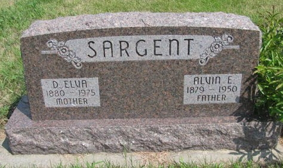

Daisy Elva Sargent (née Eyler) 1880 - 1975
[ Home ] | [ Calendar ] | [ Surnames Index ] | [ Census Index ] | [ Family History ]Daisy Eyler, the wife of Alvin Edmund Sargent (the third cousin three-times-removed on the mother's side of Nigel Horne), was born in Nebraska, USA on Jun 27, 18801,2 and married Alvin (an agricultural laborer with whom she had 3 children: Mervin Charles, Glen Russel and Bessie Irene) in Osceola, Polk, Nebraska on Aug 1, 1899.
During her life, she was living in Canada, Polk, Nebraska on Apr 15, 19103 and on Apr 1, 19304; and in Shelby, Polk, Nebraska on Apr 1, 19405.
She died in Oct 1975 in Polk, Nebraska, USA1,2 and was buried at Graceland Cemetery, Shelby, Nebraska after Oct 1, 19751.
Children
- Mervin Charles was born on Feb 19, 1900
- Glen Russel was born on Jul 7, 1902
- Bessie Irene was born on Mar 12, 1904
Citations
- U.S., Find A Grave Index, 1600s-Current Ancestry.com Operations, Inc.
- United States Billion Graves index - Findmypast
- US Census 1910 - Findmypast (was age 29 and the wife of the head of the household)
- US Census 1930 - Findmypast (was age 49 and the wife of the head of the household)
- US Census 1940 - Findmypast (was age 59 and the wife of the head of the household)
Media
Sargent Headstone

Alvin Sargent - Daisy Eyler - marriage certificate

1900 US Census Transcription - USC-1900-004120377-00662-021
1910 US Census Transcription - USC-1910-004972823-00924-030
1920 US Census Transcription - USC-1920-004966379-00013-092
US Census 1940 - USC/1940/1476762146
US Census 1930 - USC/1930/004951879/00032/008
United States Billion Graves index - US/BMD/BILLION024132628
Family Tree

Generated by ged2site. Last updated on Jun 11, 2024